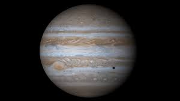

Главная

Колонизация планет Cолнечной системы и их спутников |
|||||||||||||||||||||||||||||||||||||||||||||||||||||||||||||||||||||||
|
Юпитер Параметры:
К сожалению, колонизировать сам Юпитер вряд ли удастся, ведь у этой планеты нет твердой поверхности (Юпитер относиться к газовым гигантам). Но есть проекты постройки «парящих городов» в атмосфере Юпитера. Также возможна постройка баз по добычи на юпитере полезных ресурсов таких, как, например, металлический водород, гелий-3 и другие необходимые ископаемые, которых либо нет на Земле, либо они редкие, либо их запасы кончаются. Но у Юпитера множество спутников, которые можно колонизировать, а Юпитер использовать как огромный источник сырья и энергии для поддержания жизни на спутниках. Спутники Юпитера — естественные спутники планеты Юпитер. На 2019 год известны 79 спутников Юпитера. Кроме того, у Юпитера есть система колец. В СМИ, популярной и художественной литературе спутники Юпитера нередко называют лунами Юпитера. Но большинство из них очень мелкие, поэтому их вряд ли когда-то удастся полностью колонизировать. Но есть и более крупные, которые и являются одними из кандидатов на колонизацию. Четыре спутника Юпитера — Ио, Европа, Ганимед и Каллисто — являются основными кандидатами для колонизации в пределах Солнечной системы наряду с Марсом, Венерой, Луной, Меркурием и поясом астероидов.
Колонизация спутников ЮпитераКолонизация ЕвропыСпутник Юпитера Европа рассматривается учёными в качестве потенциального объекта колонизации. Особенности геологического строения спутника, в том числе вероятность наличия под поверхностью океана жидкой воды, позволяет рассматривать различные проекты станций как на поверхности Европы, так и подо льдом. Существует уже множество проектов по колонизации этой луны. Планируется, что первые колонисты после посадки на Европу сначала создадут небольшую базу на ее поверхности. После этого планируется пробурить скважину до гипотетического океана сквозь ледяную корку, покрывающую спутник. Затем исследователи должны будут создать (или, вероятно, обнаружить) «карман» между ледяной коркой и поверхностью воды, в котором и будет создана база. Таким образом, база будет защищена толстым слоем льда от губительной радиации Юпитера. Наличие жидкой воды позволяет надеяться, что температура подо льдом более приемлемая, чем на поверхности. Колонизация ГанимедаКолонизация Ганимеда рассматривается целым рядом исследователей и футурологов в тесной взаимосвязи с колонизацией других галилеевых спутников и изучением Юпитера. Ганимед является крупнейшим спутником в Солнечной системе и крупнейшим из спутников Юпитера, и это обстоятельство побудило многих исследователей рассматривать его в качестве кандидата к заселению его в будущем. Большую роль сыграло также и то, что Ганимед, обладая собственным и достаточно сильным магнитным полем, оказался гораздо более безопасным в плане радиации, чем, например, спутник Юпитера Европа. В целом это небесное тело больше похожее на планету, чем на спутник планеты, обладает всеми необходимыми ресурсами для его полноценного заселения выходцами с Земли. Ганимед находится очень далеко от Земли. И хотя в системе Юпитера побывало уже немалое количество исследовательских аппаратов, все исследователи признают, что трудности полетов к Юпитеру весьма велики. Это и проход через главный пояс астероидов, и сложное маневрирование в самой системе Юпитера. Следует отметить, что основной силовой установкой для будущей колонизации вероятнее всего будет ионный двигатель. Необходимо будет на орбите Ганимеда построить орбитальную базу, которая должна будет включать в свои функции:
В качестве орбитальной базы может выступать одна-две крупные орбитальные станции и группировка специализированных спутников. В настоящее время в качестве источников энергии для колоний может рассматриваться только ядерная энергетика, организованная на поверхности Ганимеда. Не может быть сомнений в том, что этот спутник Юпитера содержит в составе своих горных пород дейтерий, так как эти горные породы состоят преимущественно из воды. Вероятно также что в литосфере Ганимеда имеется и ураново- ториевое энергетическое сырье, а также предположительно имеются запасы геотермальной энергии (теплая вода), или залежи газов под большим давлением. На поверхности Ганимеда холодно. Очень. И именно это обстоятельство может послужить одним из важнейших положительных условий для развития широкой строительной промышленности. Неисчерпаемые запасы водного льда позволяют на Ганимеде строить из ледяных блоков любые сооружения, а в качестве своеобразного «цемента» использовать обыкновенную воду. Что касается металлургии, то в настоящее время не выяснено какими запасами и каких металлов Ганимед богат, и насколько рентабельно их будет производить в условиях будущих потребностей ганимедианских поселений людей. Несомненно, что Ганимед в основном обладает запасами именно легких элементов, таких как алюминий, магний, кальций, кремний и железо в составе соответствующих гидросиликатов, и среди них ведущую роль будут играть именно алюминий и железо. Что касается самой металлургии, то получение соответствующих металлов вероятно будет производиться классическим способом для алюминия (электролиз расплавов), а для железа прямым восстановлением водородом или гидрометаллургически (электролиз растворов). Транспорт на Ганимеде прежде всего это трубопроводы для передачи газов, сыпучих грузов (рудные материалы), и вероятно для перевозки пассажиров. Агрессивные излучения из радиационных поясов Юпитера окажут важную роль для организации перевозок поселенцев именно в герметичном и защищенном русле, то есть в вагонах по трубам-туннелям. На поверхности также может быть использован колесный и гусеничный транспорт для горнодобывающей и строительной техники, а также рельсовый электротранспорт. Ввиду относительно невысокой гравитации на поверхности Ганимеда может быть использован и реактивный способ передвижения, например для переброски каких-либо грузов в отдаленные районы этого спутника Юпитера. Колонизация КаллистоПо оценкам НАСА, Каллисто может стать первым из колонизированных спутников Юпитера. Начиная с 1980-х годов Каллисто считается привлекательной целью для пилотируемого космического полёта благодаря тому, что геологически очень стабильна и лежит вне радиационного пояса Юпитера. Предложено в перспективе построить на спутнике станцию по переработке и производству топлива из окружающих льдов для космических аппаратом, направляющихся для исследования более отдалённых областей Солнечной системы, помимо этого лёд можно было бы использовать и для добычи воды. Одним из преимуществ основания такой станции именно на Каллисто считается низкий уровень радиационного излучения (благодаря отдалённости от Юпитера) и геологическая стабильность. С поверхности спутника можно было бы удалённо, почти в режиме реального времени исследовать Европу, а также создать на Каллисто промежуточную станцию для обслуживания космических аппаратов, направляющихся к Юпитеру для совершения гравитационного манёвра в целях полёта во внешние области Солнечной системы. Считается, что к Каллисто отправится от одного до трёх межпланетных кораблей, один из которых будет нести экипаж, а остальные — наземную базу, устройство для добычи воды и реактор для выработки энергии. Предполагаемая длительность пребывания на поверхности спутника: от 32 до 123 суток; сам полёт, как считается, займёт от 2 до 5 лет. Колонизация ИоПолностью колонизировать этот спутник полностью не удастся, т.к. он очень близок к Юпитеру, поэтому на его поверхности огромная радиация. Также эта луна геологически очень активна. Ио может стать базой для получения вулканической энергии. Плюсы и минусы колонизации спутников ЮпитераВсе спутники Юпитера очень далеки от Земли. Многие из них находятся в область радиационного пояса Юпитера. К ним доходит очень мало солнечной энергии, поэтому придется использовать ядерные двигатели при полете к этим лунам. Да и сам полет будет долгим и сложным для земных исследователей. Также для колонизации спутников Юпитера необходимы технологии, которые либо очень дорогие, либо еще не существуют. НО! Но, если всё-таки получится колонизировать их, то это позволить изучать более далекие объекты в режиме реального времени. Также станет возможным постройка баз по добыче сырья с Юпитера. Это будет огромный толчок для колонизации других тел Солнечной системы. ВыводыКолонизация Юпитера и его спутников – это очень трудно осуществимый проект, а на настоящее время и невозможный. Но при развитии технологий все ближе подходит момент, когда человечество будет осуществлять свои проекты. И тогда у него появиться огромный источник сырья в виде целой планеты Юпитер. А также и несколько мест, на которых можно будет остановиться. |

Юпитер 
Европа 
Ганимед 
Каллисто 
Ио 
|
||||||||||||||||||||||||||||||||||||||||||||||||||||||||||||||||||||||

© Сайт проекта колонизации планет Солнечной системы 2020 -
|
|||||||||||||||||||||||||||||||||||||||||||||||||||||||||||||||||||||||